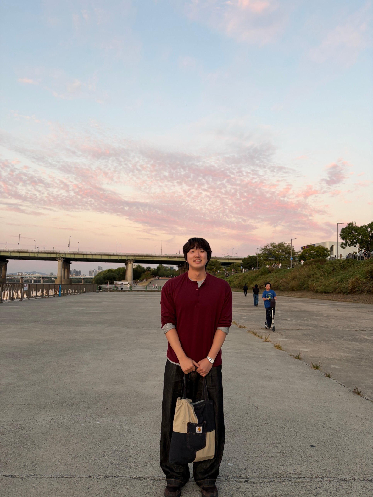
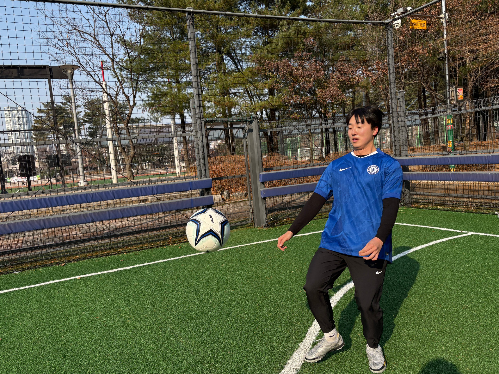
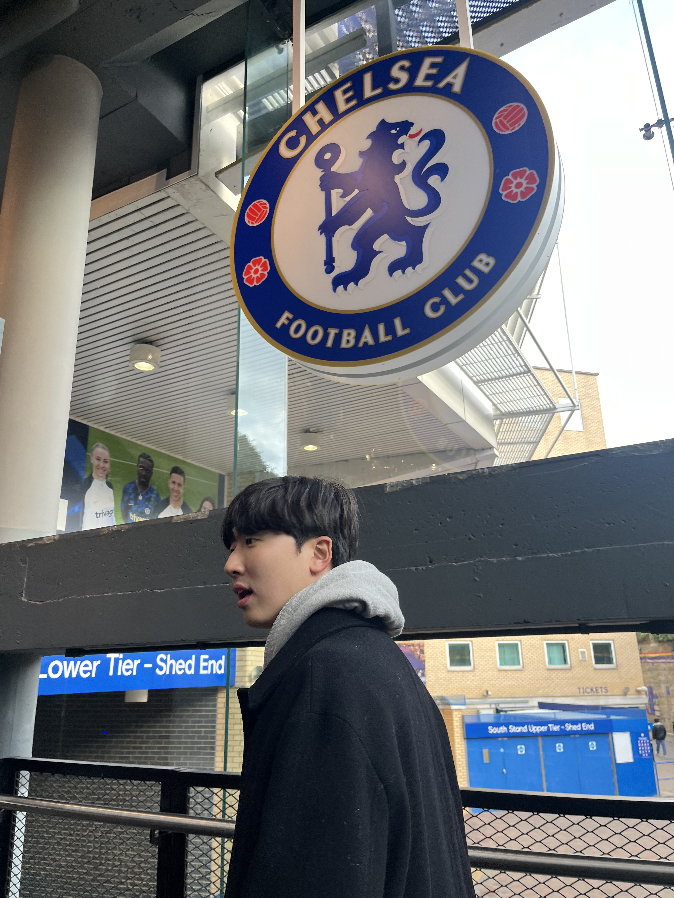
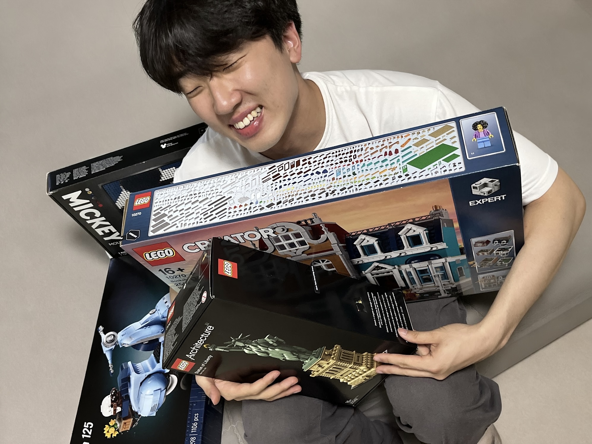
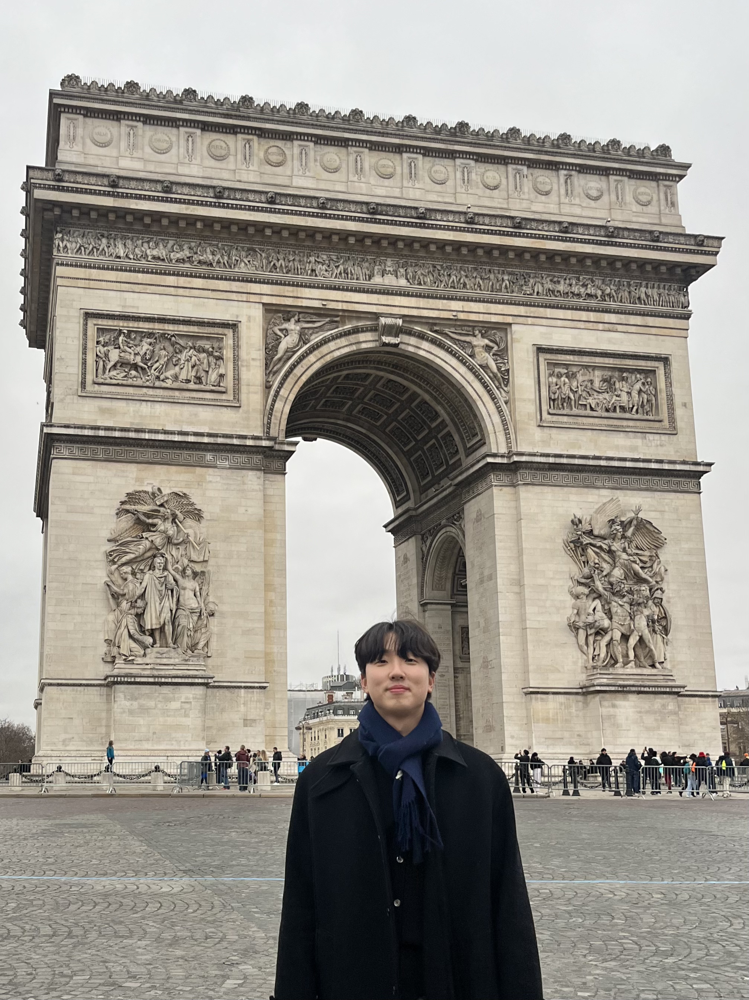

Beyond the lab

Outside the lab, I play soccer, follow Chelsea FC, build Lego sets and travel when I can. I also love a quiet day at home with YouTube.





Outside the lab, I play soccer, follow Chelsea FC, build Lego sets and travel when I can. I also love a quiet day at home with YouTube.



